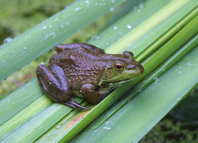

Home
A frog is any member of a diverse and largely carnivorous group of short-bodied, tailless amphibians composing the order Anura(ανοὐρά, literally without tail in Ancient Greek). The oldest fossil "proto-frog" Triadobatrachus is known from the Early Triassic of Madagascar, but molecular clock dating suggests their split from other amphibians may extend further back to the Permian, 265 million years ago. Frogs are widely distributed, ranging from the tropics to subarctic regions, but the greatest concentration of species diversity is in tropical rainforest. Frogs account for around 88% of extant amphibian species. They are also one of the five most diverse vertebrate orders. Warty frog species tend to be called toads, but the distinction between frogs and toads is informal, not from taxonomy or evolutionary history.
An adult frog has a stout body, protruding eyes, anteriorly-attached tongue, limbs folded underneath, and no tail (the tail of tailed frogs is an extension of the male cloaca). Frogs have glandular skin, with secretions ranging from distasteful to toxic. Their skin varies in colour from well-camouflaged dappled brown, grey and green to vivid patterns of bright red or yellow and black to show toxicity and ward off predators. Adult frogs live in fresh water and on dry land; some species are adapted for living underground or in trees.